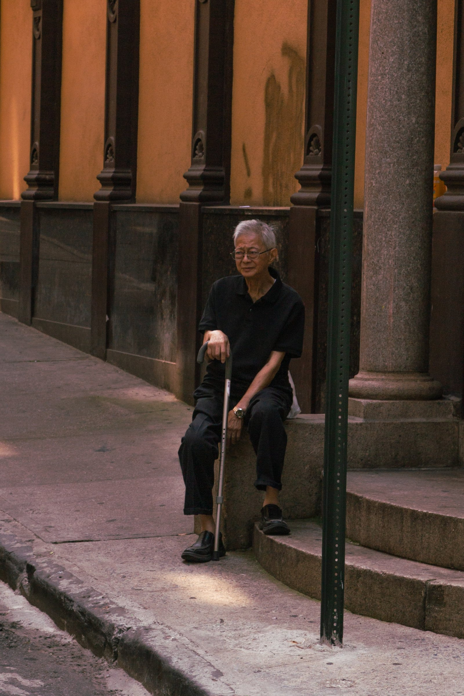
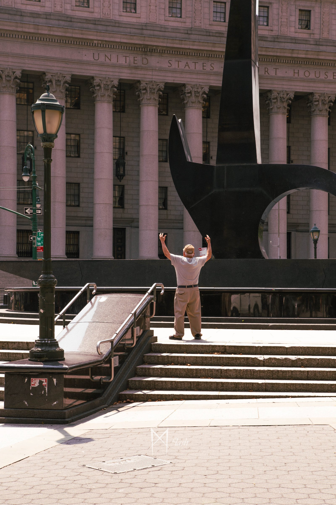
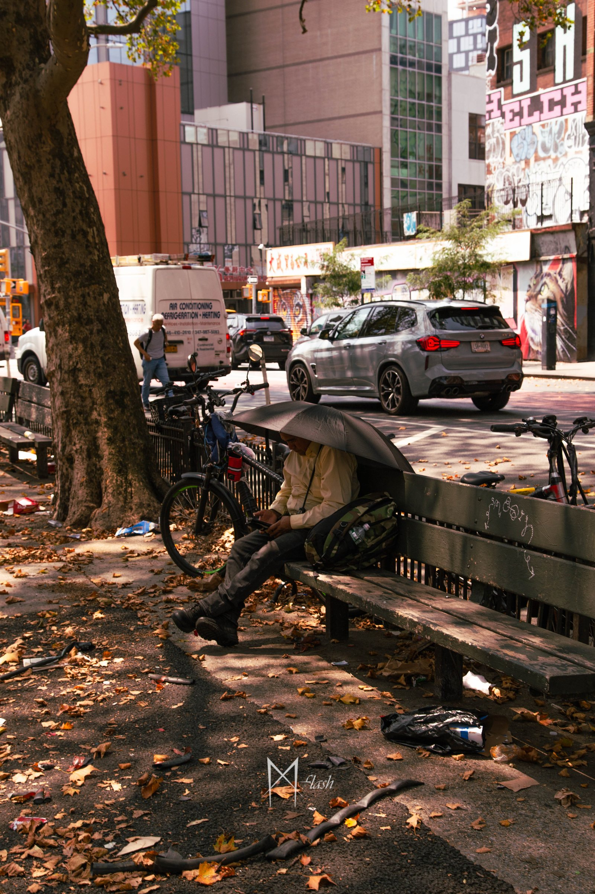
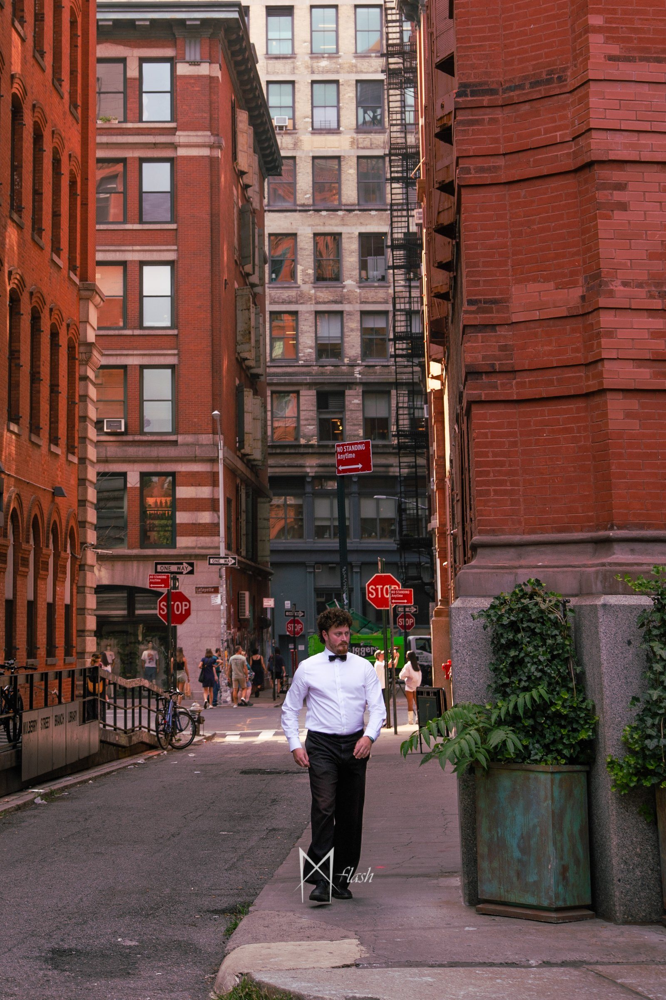
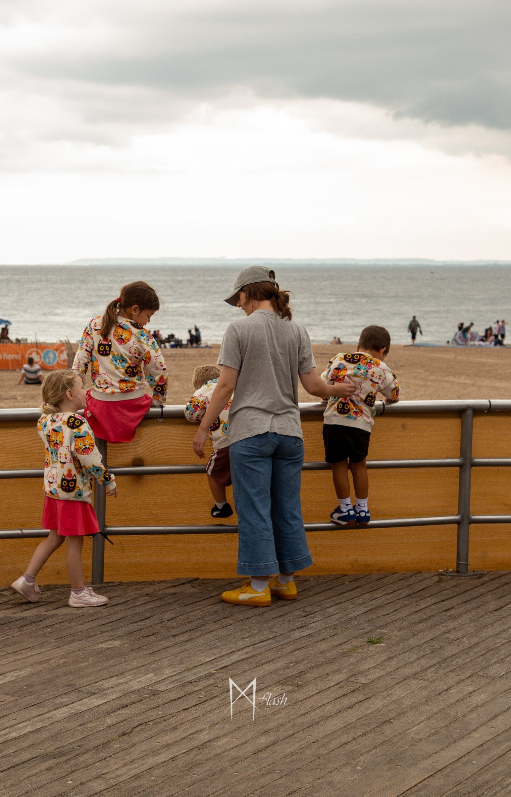
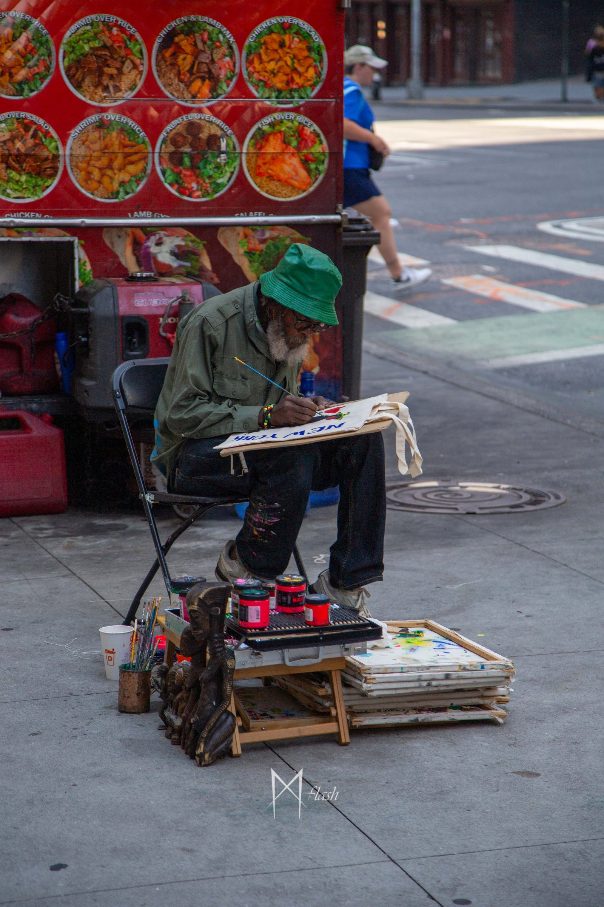
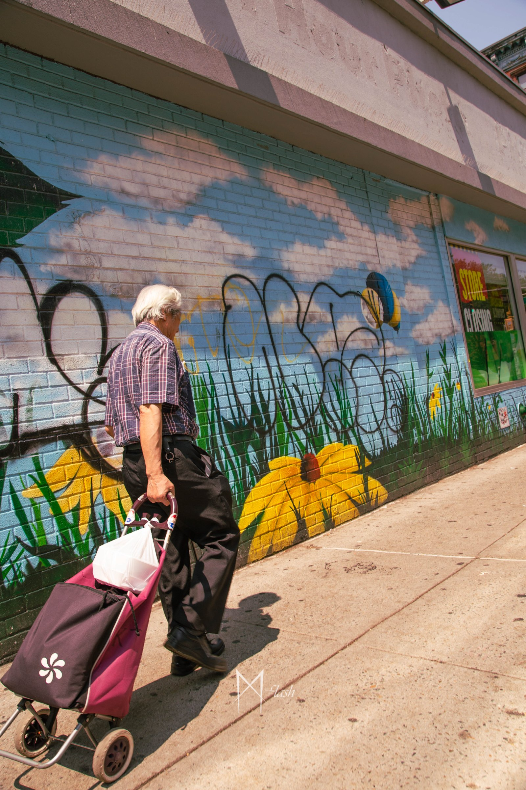
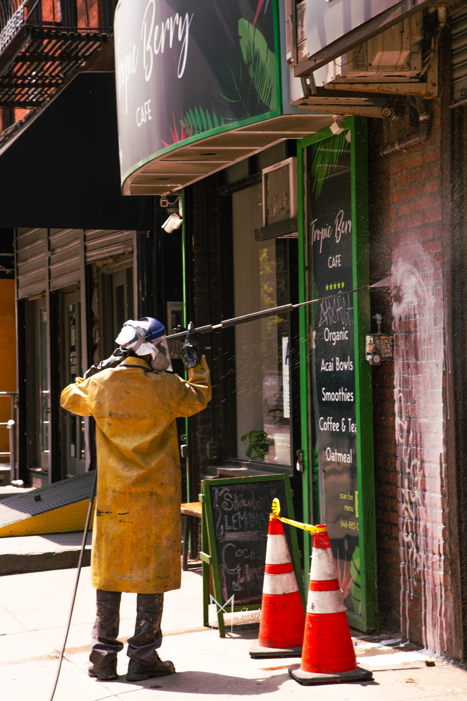
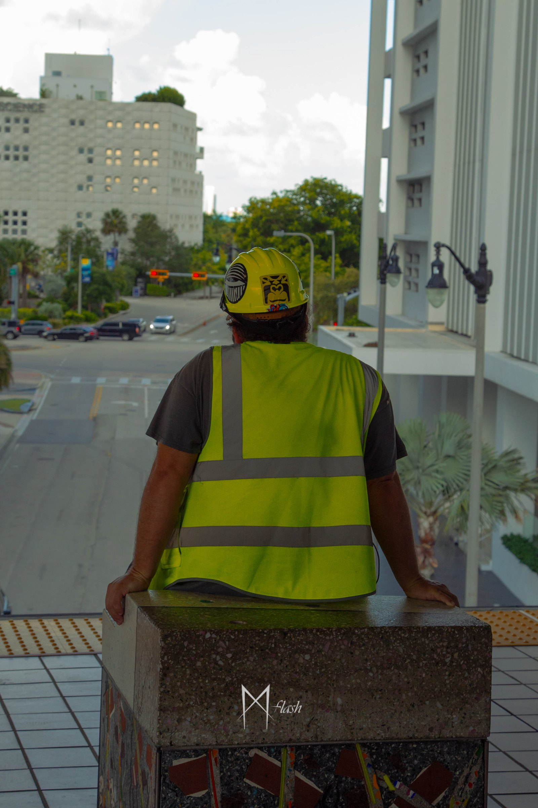

Photo · 20 août 2025
Street photographie - USA









Le projet
En quelques mots
Street photo de portraits USA — Immersion visuelle de New York à Miami en passant par les Everglades lors d'une manifestation. Une série sur le vif capturant ambiances, perspectives et contrastes urbains ou situations culturelles différentes
Outils
Logiciels utilisés
 Lr
LrLightroom
Développement photo